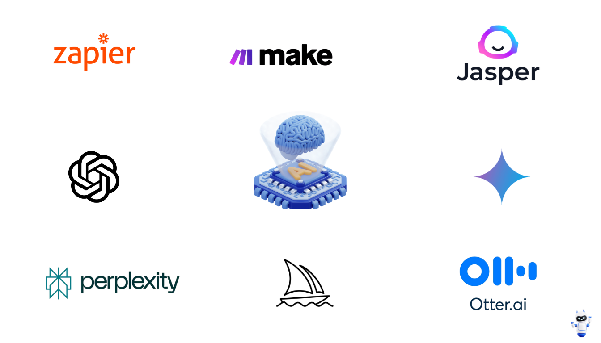

Top 10 AI Automation Tools to Boost Your Productivity in 2025
Published on: May 3, 2025
Introduction: The Automation Revolution
In 2025, the integration of Artificial Intelligence (AI) into our daily workflows is no longer a futuristic concept but a practical necessity for staying competitive and efficient. AI automation tools are rapidly evolving, offering sophisticated ways to handle repetitive tasks, generate insights, enhance creativity, and ultimately, free up valuable time for strategic thinking and complex problem-solving. Whether you're a freelancer, part of a large enterprise, a student, or a creative professional, leveraging the right AI tools can dramatically boost your productivity. This guide explores the top 10 AI automation tools making waves in 2025, helping you work smarter, not harder.
1. Workflow Automation Platforms (e.g., Zapier, Make)
Workflow automation platforms act as the digital glue connecting the various apps and services you use daily. Tools like Zapier and Make (formerly Integromat) allow you to build automated sequences ("Zaps" or "Scenarios") without writing any code. By leveraging their growing AI capabilities, you can create even smarter automations.
How they boost productivity: They eliminate manual data entry, trigger actions based on events in other apps (like sending a notification when a new lead comes in), automate social media posting, manage email lists, and much more. AI features can help parse text, categorize information, or decide on the next step in a workflow, making automations more dynamic and intelligent.
Use Cases: Automatically saving email attachments to cloud storage, posting blog updates to social media, adding new CRM contacts to email marketing lists, creating tasks in project management tools based on emails.
2. AI Writing Assistants (e.g., Jasper, Copy.ai, ChatGPT)
AI writing assistants have become indispensable for anyone involved in content creation, marketing, or communication. Tools like Jasper, Copy.ai, and the versatile ChatGPT (especially GPT-4 and beyond) can generate various forms of text content, from blog posts and emails to ad copy and social media updates, based on your prompts.
How they boost productivity: They drastically reduce the time spent on drafting initial content, overcoming writer's block, brainstorming ideas, summarizing long documents, and repurposing existing content. They act as tireless assistants for generating text quickly and efficiently.
Use Cases: Drafting blog posts, writing marketing emails, generating product descriptions, creating social media captions, summarizing research papers, brainstorming headlines.
3. AI Meeting Assistants (e.g., Fireflies.ai, Otter.ai, Nyota)
Meetings are essential but often consume significant time, especially with note-taking and follow-up tasks. AI meeting assistants join your calls (on platforms like Zoom, Google Meet, Microsoft Teams), automatically transcribe the conversation, identify key points, and generate summaries.
How they boost productivity: They eliminate the need for manual note-taking, ensure accurate records of discussions, make meeting content searchable, and help identify action items and decisions. This allows participants to focus fully on the conversation.
Use Cases: Transcribing interviews, generating meeting minutes, summarizing sales calls, tracking action items from team meetings, creating searchable archives of discussions.
4. AI-Powered Project Management (e.g., ClickUp AI, Asana Intelligence)
Project management platforms are integrating AI to offer smarter ways to plan, track, and manage work. Tools like ClickUp AI and Asana Intelligence can automate task creation, generate reports, predict project timelines, identify potential bottlenecks, and summarize progress.
How they boost productivity: They streamline project setup, provide predictive insights for better planning, automate status updates, and help teams stay organized by suggesting tasks or highlighting risks. They reduce the administrative overhead of project management.
Use Cases: Automatically generating subtasks for a larger project, summarizing project progress for stakeholders, identifying tasks that are falling behind, suggesting resource allocation adjustments.
5. AI Email Management (e.g., SaneBox, Superhuman AI)
Email overload is a major productivity killer. AI email management tools help you regain control of your inbox by automatically sorting emails, summarizing long threads, drafting replies, and scheduling messages.
How they boost productivity: They prioritize important messages, filter out distractions, speed up email composition, and ensure timely follow-ups. They transform the inbox from a source of stress into a manageable communication hub.
Use Cases: Automatically filtering newsletters and promotional emails, summarizing lengthy email chains, drafting quick replies based on context, scheduling emails to be sent at optimal times.
6. AI Research & Search Tools (e.g., Perplexity AI, Elicit)
Beyond traditional search engines, AI-powered research tools provide more direct answers, synthesize information from multiple sources, and help researchers find relevant papers or data more efficiently. Perplexity AI offers conversational search with citations, while Elicit focuses on academic research.
How they boost productivity: They accelerate the research process by providing synthesized answers instead of just lists of links, helping users quickly grasp complex topics and find specific information or academic literature.
Use Cases: Getting quick summaries of complex topics with sources, finding relevant academic papers for literature reviews, asking specific questions and receiving synthesized answers, exploring different facets of a research question.
7. AI Coding Assistants (e.g., GitHub Copilot, Tabnine)
For developers, AI coding assistants are transforming the way software is built. Tools like GitHub Copilot and Tabnine integrate directly into code editors, suggesting lines or entire functions of code as you type, helping debug issues, and explaining code snippets.
How they boost productivity: They significantly speed up the coding process, reduce repetitive typing, help developers learn new languages or frameworks faster, and assist in identifying and fixing bugs more quickly.
Use Cases: Autocompleting code blocks, generating boilerplate code, translating code between languages, explaining unfamiliar code, suggesting bug fixes.
8. AI Note-Taking & Knowledge Management (e.g., Notion AI, Mem)
Modern note-taking apps are embedding AI to help users organize information, summarize notes, and connect ideas. Notion AI allows you to summarize, brainstorm, and draft content within your notes, while tools like Mem focus on creating a self-organizing knowledge base.
How they boost productivity: They make it easier to capture, organize, and retrieve information. AI features help synthesize notes, generate action items from meeting notes, and surface relevant information automatically, reducing time spent searching and organizing.
Use Cases: Summarizing meeting notes, generating action items from brainstorming sessions, drafting content based on existing notes, automatically linking related notes, finding information quickly within a large knowledge base.
9. AI Customer Service Automation (e.g., Intercom Fin, Zendesk AI)
AI is revolutionizing customer support by powering intelligent chatbots, automating ticket routing, suggesting replies to agents, and providing analytics on customer interactions. Platforms like Intercom and Zendesk offer sophisticated AI features.
How they boost productivity: They provide instant answers to common customer queries 24/7, reduce agent workload by handling simple requests, speed up response times, and offer insights to improve customer service quality. This frees up human agents for complex issues.
Use Cases: Answering frequently asked questions via chatbot, automatically routing support tickets to the right team, suggesting relevant help articles to agents, summarizing customer issues, analyzing support trends.
10. AI Presentation Builders (e.g., Tome, Gamma)
Creating compelling presentations can be time-consuming. AI presentation builders allow users to generate entire presentations, including text, layouts, and images, simply by providing a topic or outline.
How they boost productivity: They dramatically reduce the time needed to create initial presentation drafts, suggest layouts and visuals, and help structure content logically. Users can then refine the AI-generated base.
Use Cases: Quickly creating drafts for sales pitches, generating slides for internal reports, building educational presentations, visualizing ideas for brainstorming sessions.
Conclusion: Embracing AI for Enhanced Productivity
The AI automation tools available in 2025 offer unprecedented opportunities to streamline workflows, eliminate tedious tasks, and unlock new levels of productivity. From managing emails and meetings to writing code and creating content, AI can act as a powerful assistant across nearly every aspect of work. The key is to identify the tools that best address your specific pain points and integrate them thoughtfully into your workflow. By embracing AI automation, you can focus your energy on higher-value activities, achieve more in less time, and stay ahead in an increasingly AI-driven world.
Frequently Asked Questions
Q1: Are these AI tools difficult to learn?
A: Most modern AI tools are designed with user-friendliness in mind. While some, like workflow automation platforms, might have a steeper learning curve initially, many AI writing assistants, meeting tools, and presentation builders are quite intuitive. Often, the effectiveness comes from learning how to provide clear instructions (prompts) rather than complex technical skills.
Q2: Do AI automation tools replace human jobs?
A: While AI automation handles tasks previously done by humans, the primary goal is often augmentation, not replacement. These tools typically automate repetitive, time-consuming tasks, freeing up humans to focus on more complex, creative, and strategic work that requires critical thinking, emotional intelligence, and nuanced judgment – skills AI currently lacks.
Q3: What are the costs associated with these tools?
A: Costs vary widely. Many tools offer free tiers with limited functionality or usage caps. Paid plans often operate on a subscription basis (monthly or annually), with pricing depending on features, usage volume, and the number of users. It's important to evaluate the potential return on investment (time saved, increased output) when considering paid plans.
Q4: How secure is my data when using AI automation tools?
A: Data security is a critical consideration. Reputable AI tool providers invest heavily in security measures and comply with data privacy regulations (like GDPR). However, it's crucial to review each tool's privacy policy and security practices, especially when handling sensitive or confidential information. Be cautious about inputting highly sensitive data into any third-party tool unless its security posture is thoroughly vetted.